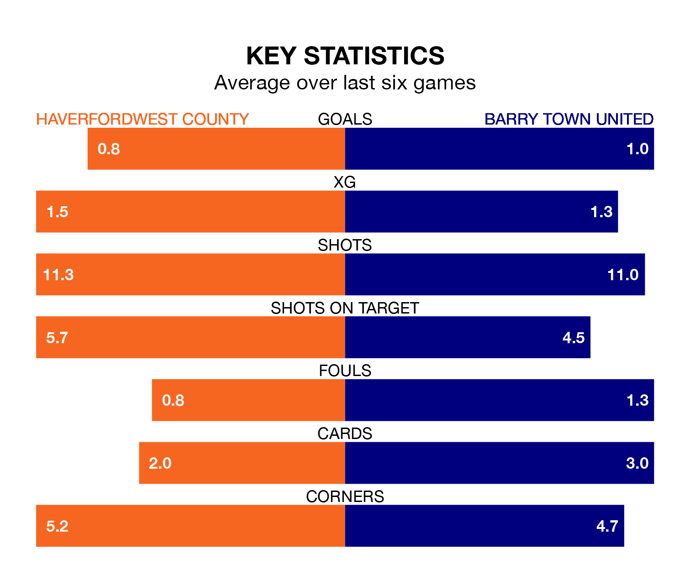

The Welsh Premier League's top two sides face each other at the New Bridge Meadow Stadium in Friday's late kick-off, when zero-placed Haverfordwest County host zero-placed Barry Town United.
Haverfordwest have picked up nine wins and 10 draws from 29 games so far this season, and sit eight points above the visitors going into the 7.45pm match.
The Dragons, meanwhile, have won six and drawn 11, picking up 29 points.
In the last 10 years, Haverfordwest and Barry Town have played each other on 10 occasions. Haverfordwest won five of them, Barry Town two, and they drew three times.
On average, the Bluebirds scored 1.8 goals and the Dragons 1.2 in those matches.
Their last meeting was on February 23, when they played out a 1-1 draw.
Haverfordwest are in mixed form in the Welsh Premier League, with two wins and three draws from their last six games.
With no wins and six draws over that period, Barry Town's form is worse – they have taken six points from 18, compared to County's nine.
With 33 goals in 29 games so far this season, United are the league's-2th-lowest scorers with 1.1 goals per game. And they are conceding more than average, letting in 50 goals at a rate of 1.7 per game.
The Bluebirds are also below average scorers, with 1.2 goals per game, compared to a league average of 1.5. They have conceded 1.3 goals per game.
Haverfordwest's last match was on March 29, a 1-0 win against Pontypridd Town AFC, with Rhys Abbruzzese getting the goal for the Bluebirds.
Barry Town drew 0-0 with Penybont last time out, also on March 29.
Updated: 10:31 (UTC), 31/03/24